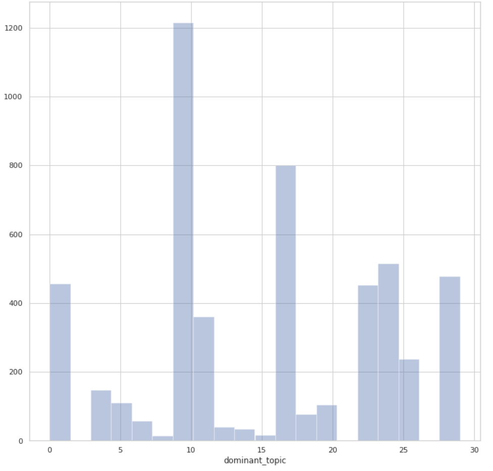
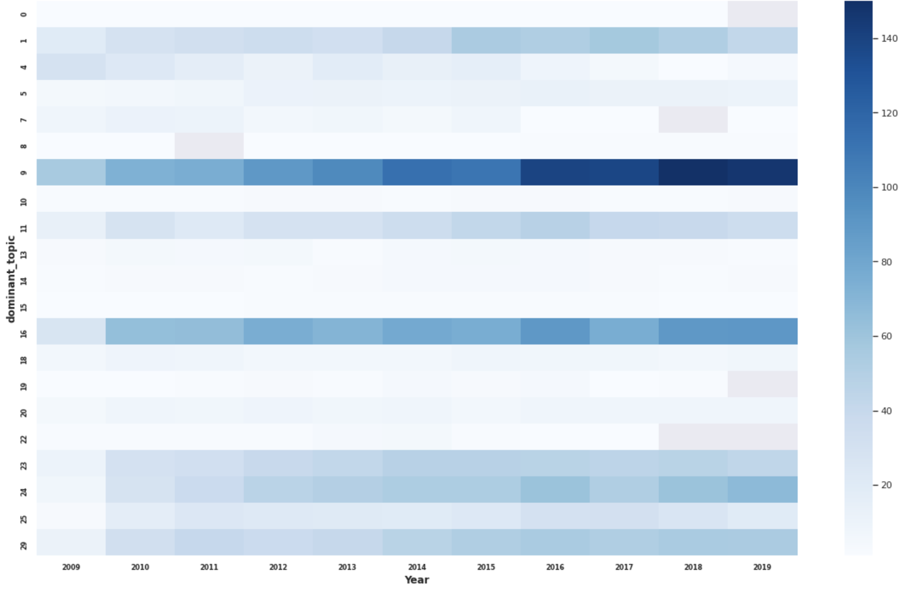
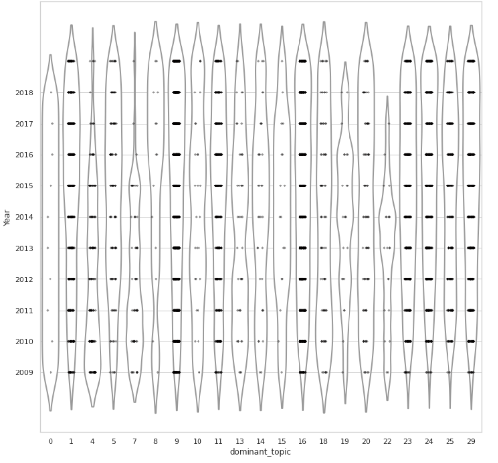

Climate Risk Disclosure of S&P 500 Firms
Discovering Hidden Topics in Climate Risk Disclosure in Item 1A. Risk Factors (Topic Analysis Using LDA)
What is the distribution of dominant topics for each year?



How do we make sense of these topics?